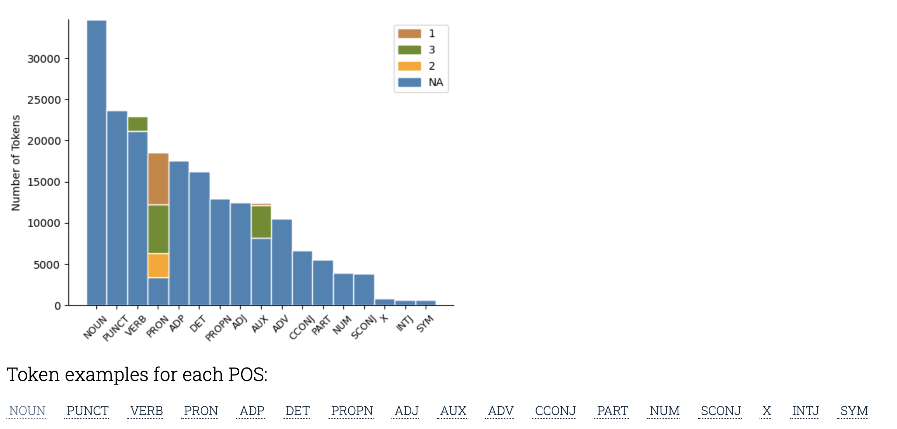
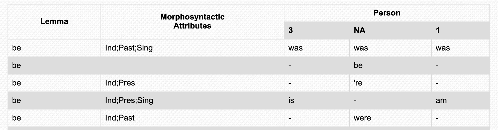
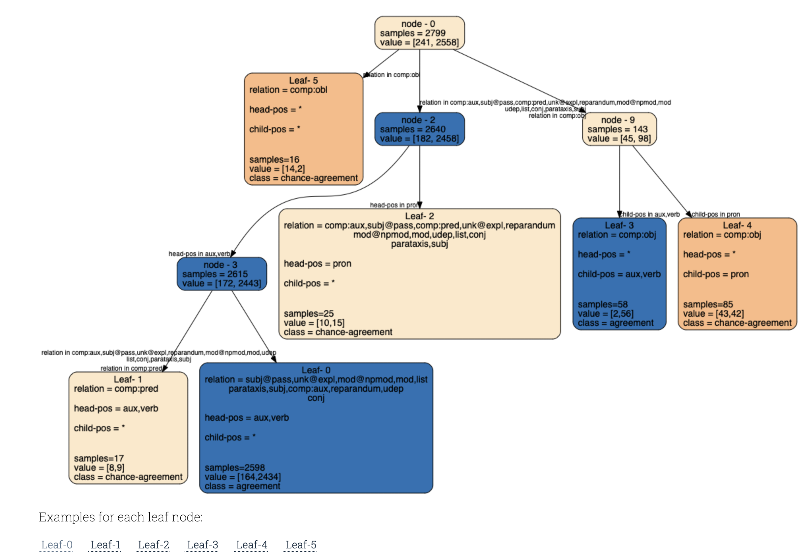

We present analysis for six morphological attributes: Gender, Person, Number, Tense, Mood and Case. Our tool is organized around answering the following lingusitic questions.
Which word classes mark a given morphology attribute?
For example, the en_ewt/Person page presents information on Person agreement for English, specifically the en_ewt treebank.
We present the token distribution for the different attribute values the Person attribute takes, as shown below. The token distribution is presented for each part-of-speech tag.

Under the bar plot, we further provide examples of the tokens under each POS tag. For example, on clicking AUX, the tokens for each Person feature value is shown below. These tokens are ordered by frequency.

What are the syntactic rules governing morphology agreement?
Our goal is to extract from textual examples the set of rules that concisely describe the agreement process for a language, specifying for which head-dependent pairs the language displays required-agreement and in which cases we will observe at most chance-agreement.
Some agreements that we observe in the data can be attributed to an underlying grammatical rule,such as the rule that the subject and verb need to agree on person, we will refer to these as required-agreement.
However, not all word pairs that agree do so because of some underlying rule, and we will refer to such cases as chance-agreement .
We visualize the rules with a decision tree as shown below for Person agreement. The tree is built over syntactic features obtained from automatically parsed data: head-pos and child-pos refer to the POS tag of the head and child token respectively and relation is the dependency relation between the head-child pair.

Each node of the tree represents a portion of the data. samples denotes the number of training data points in that node. value is the class distribution within that node. Each edge denotes the feature used for splitting.Leaf nodes contain the description of all of the features that appear in that leaf. * denotes that the feature can take any value.
For easy readability, the decision tree has been simplified by merging leaves with same label into a single leaf. To visualize the original expanded tree, select the Expand button.
What are some examples (and exceptions) for each extracted rule?
For each leaf, we present illustrative examples extracted from the treebank. We show both positive examples (where the feature values match) and negative examples (where the feature values do not match) for that leaf as shown below for Leaf-0.